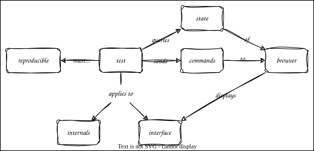

Testing in the Browser
Overview

Outline
- Automate the browser with Selenium
test_home_page.py- Create a driver in a fixture that uses
yieldto ensure shutdown - Go to a URL
- Inspect elements
- Create a driver in a fixture that uses
test_login.pyinteracts with the browser- Find elements
- Simulate typing and button clicking
- Wait for the browser to update
- Check the cookie is present